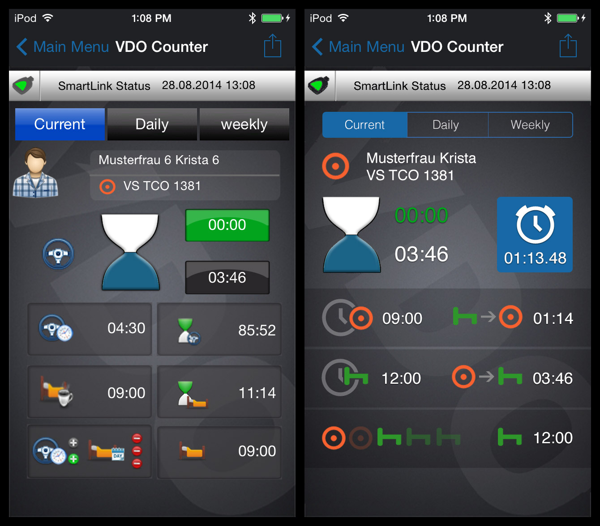
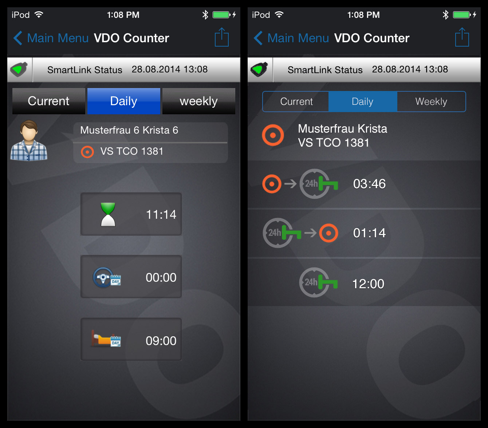
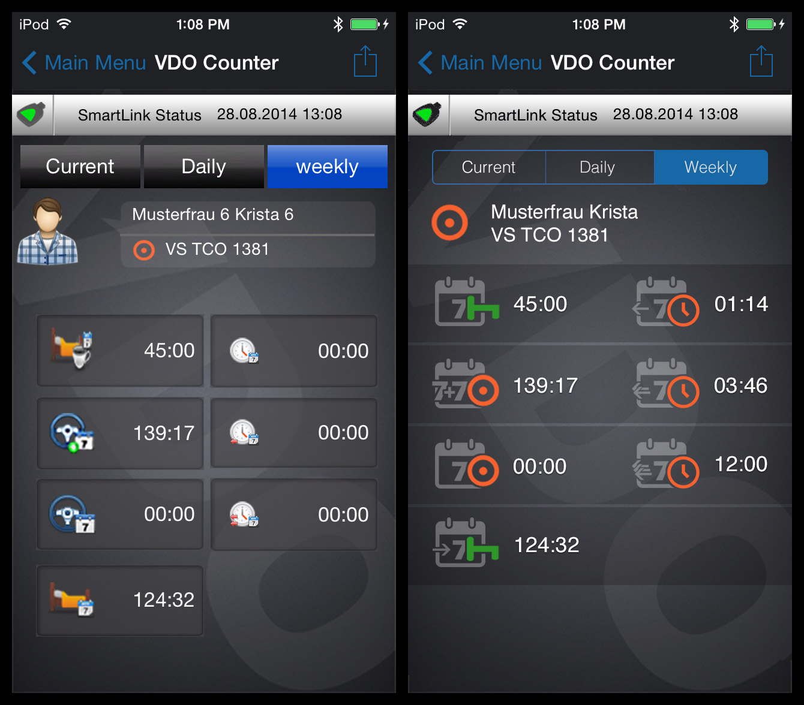

Работа по частичному улучшению интерфейса приложения компании Continental частично же завершена.
К сожалению или к счастью, менять интерфейс полностью в этой итерации нам нельзя, поэтому я сосредоточился на информационных окнах. Мы выбрали задачу упростить интерфейс приложения для понимания водителями-дальнобойщиками, поэтому пришлось создать новые иконки, использующие символы, понятные дальнобойщикам.
Старые, «привет из 90-ых», не годились совершенно никуда.
О символах: круг с точкой — это руль, процесс «Работа», а табуреточка — это кровать и процесс «Отдых». Есть еще «Иная работа» и «Ожидание», но они на экранах не использовались.
Задача усложнялась тем, что иконки эти должны показывать такие данные, как «Переработка по времени за поза-поза-позапрошлую неделю» или «Суммарное рабочее время за рулем за текущую и предыдущую недели». Очень интересно было создавать визуально различные объекты, которые несли бы хотя бы толику смысла.
Как всегда, закончив работу, я вижу в ней ещё кучу косяков и мест для полировки. Но текущая итерация закончена и мы вернемся к этой работе позже.